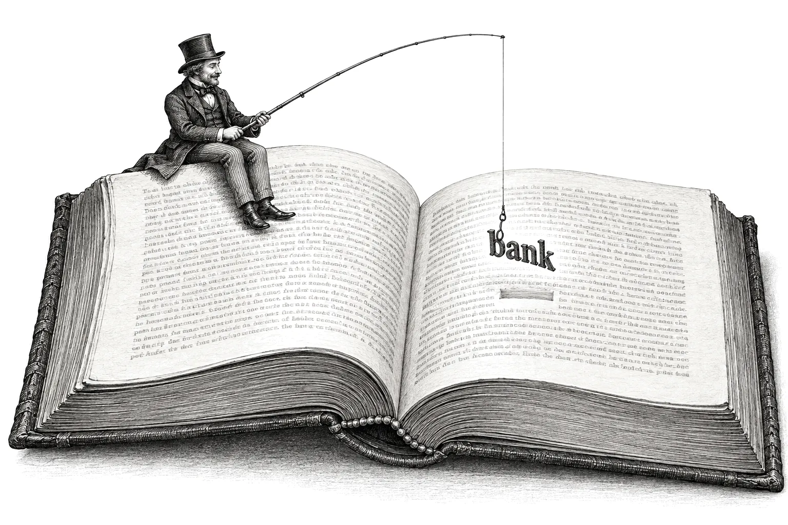

How Attention Works in a Transformer
The chatbots in wide use today run on a design called the transformer. The central step in a transformer is attention. At that step, information from the earlier words gets added to each word.
OpenAI released a small transformer called GPT-2 small in 2019. Its learned numbers, often called weights, are publicly available. The model is small enough to run on an ordinary computer. Every score and percentage in the figures comes from running the model with those numbers. Three tokens go in: a start marker, “bank” and “note”. A probability for every possible next token comes out.
What a transformer does
A run of tokens goes into a transformer, and a probability for every token that could come next comes out. For GPT-2 small, the probabilities cover all 50,257 tokens in its vocabulary and add up to 100%. Training set every number inside GPT-2. The training run guessed the next token over and over on text from about 8 million web pages.
A token is a word or a piece of a word. Common words such as “bank” and “note” get one token each. A rarer word gets split into pieces, so “notebook” becomes “note” followed by “book”.
The first token in the example is a start marker. This special token sat in front of every document in GPT-2’s training text. The same token sat at the end of one training document and the start of the next, so its official name is <|endoftext|>. In the figures, it carries the label marker.
Each token gets its own lane through the model. The three lanes run side by side. The guess for the next token comes out of the last lane, the one for “note”.
Each token becomes a list of numbers
GPT-2 holds a token table, also called the embedding table, with one row for each of the 50,257 tokens. Each row holds 768 numbers. A list of numbers like this is called a vector, and 768 is the model’s width.
The row for “note” starts with 0.160, −0.171, 0.089, −0.282, 0.061, 0.206, −0.269, −0.053, and 760 more numbers follow. The slots carry no labels a person could read. You can picture the 768 numbers as a location on a map with 768 directions. Tokens with related meanings get nearby locations, so their lists of numbers look alike. The vector for “bank”, for example, sits close to the vectors for “banks”, “banking”, “banker”, “lender” and “loans”.
Each position, first, second or third, also has its own vector. That vector gets added to the token’s vector. To add two vectors, you add them slot by slot: first number plus first number, second plus second, and so on. The result is still 768 numbers long. The same word therefore starts out slightly different in different positions.
The table stays fixed once training ends. “Bank” starts from the same row in every sentence that goes into GPT-2.
Scroll sideways to see the whole figure.
At this point, each vector holds the general meaning of its own token. Information from the neighboring tokens arrives later, in the layers. The “bank” vector carries both senses of the word, money and river. The money sense is stronger, most likely because it appears far more often in the training text.
Twelve layers, two parts each
The three vectors pass through 12 layers in order. The 12 layers together are called the stack. Every layer has the same design and holds its own learned numbers. Each layer has two parts, attention and then feed-forward.
Attention is the step where information from earlier lanes gets added to a lane. The feed-forward part works on each lane by itself, with patterns that training stored in the feed-forward grids. The marker and bank lanes run through every layer so that the note lane can take information from them in each layer. The guess comes out of the note lane.
Each part produces an update of 768 numbers, and the update gets added onto the vector, slot by slot. The vector stays 768 numbers long the whole way through. It carries the updates from every layer it passes. The vector out of one layer is the vector in of the next.
To watch the note vector change, you can run the output step early, after any layer. The output step compares a vector with every row of the token table and turns the comparisons into probabilities. Running it early is called a readout. Early readouts show “note” itself, because an untouched note vector matches its own row best. Later readouts show what tends to come next.
Scroll sideways to see the whole figure.
In the first layers, “note” itself sits at the top of the readout. Around layers 4 to 7, “-book” sits at the top. The dash marks a piece that attaches to the token before it, so “-book” after “note” makes “notebook”. In layers 8 to 11, “holders” and “issued” reach the top, as in “bank note holders” and “bank notes issued”.
A readout from the middle of the stack often shows one token with a much larger share than the final output shows. Training tuned the output step for the vector that leaves layer 12. Two words at the start of a document could begin many kinds of text, so the final probabilities spread out over many tokens. A line break comes first, most likely because a short title ends with one.
Each lane’s vector starts as a description of its own token. After layer 12, the note vector holds a description of the likely next token. The readouts show the change in small steps across the layers.
Inside one layer
Every layer has the same two parts in the same order. The numbers in Figures 5 to 9 come from layer 1.
Scroll sideways to see the whole figure.
The tokens go through the layer one at a time, in order: the marker, then bank, then note. Each token adds its key and value to the layer’s store for every token that comes later.
Attention searches the earlier tokens
You type search terms into a search box. The search compares your terms with each item’s label and returns the best-matching items. Attention works the same way.
In attention, three vectors get made from each token’s vector: a query, a key and a value. In the search-box picture, the query is the search terms. The key is the label. The value is the content that comes back on a match.
Each of the three comes from a grid of numbers with 768 rows. Each column of a grid holds 768 numbers, one for each number in the vector. To get one output number, multiply the vector’s numbers by the column’s numbers pair by pair and add up the products. A grid with 768 columns turns the vector into 768 new numbers.
With three numbers in place of 768, a vector [2, 1, 3] and a column [1, 0, 2] give 2×1 + 1×0 + 3×2 = 8. The result comes out big when the vector and the column both have big numbers in the same slots.
GPT-2 repeats this multiply-and-add everywhere. The query, the key, the scores, the feed-forward patterns and the output step all come from it. The query grid, the key grid and the value grid hold different numbers, so the three outputs differ.
Attention runs 12 of these searches at once. Each search is called a head, and each head works with its own slice of 64 numbers. The slices of all 12 heads sit side by side in one grid. The query grid is therefore 768 by 768, and its first 64 columns belong to head 1. The key grid and the value grid split the same way.
Each layer holds a store. Every token’s key and value go into the store and stay there for every token that comes later.
Head 1 compares its slice of the query with the same slice of every key in the store. The comparison is the same multiply-and-add: the two slices get multiplied slot by slot, and the 64 products get added up. That sum is the score. A bigger score marks a better match.
The scores then become shares that add up to 100%. First, every score gets turned into a positive number, and the number rises quickly as the score rises. In Figure 6, a score of 1.36 becomes about 3.9 and a score of −1.25 becomes about 0.29. Each share is one of those numbers divided by their total. The marker’s share is 3.9 out of about 4.18, or 93%. Even a negative score gets a small share, and a score far above the others gets most of the total.
Head 1’s slices of the stored values get mixed in those shares, and the mix is the result of the search. With shares of 93% and 7%, each slot of the mix is 93% of the marker’s value in that slot plus 7% of bank’s. In a weighted grade, test scores get combined the same way.
Figures 5 to 7 show head 1 of layer 1, drawn to scale. Each grid is a square as tall as the vector. Its depth is drawn at the same scale as its height. Head 1’s slice, shaded dark, takes up one twelfth of each grid and one twelfth of each query, key and value. A vector is a single column of numbers, and every vector appears at the same narrow width. The tinted frame marks the inside of the attention box in Figure 4.
The red numbers mark the order of the steps. Step 1 makes the query, the key and the value. Step 2 adds the key and the value to the store. Step 3 compares the query with every key. Step 4 mixes the values in the shares. Step 5 joins the 12 mixes and turns them into attention’s update.
Scroll sideways to see the whole figure.
Along the bottom of each figure, head 1’s mix of 64 numbers joins the mixes of the other 11 heads. Together the 12 mixes make 768 numbers, as tall as the vector. A combining grid, 768 by 768, turns them into attention’s update. The update gets added onto the vector in, and the sum is the vector after attention.
Scroll sideways to see the whole figure.
The marker’s key gets a score of 1.36, and bank’s key gets −1.25. Head 1’s shares come out at 93% for the marker and 7% for bank. Most of the mix therefore comes from the marker’s value.
Scroll sideways to see the whole figure.
In head 1, the marker’s key gets the highest score again, and the marker’s share is 83%. Bank’s share is 8%, and note’s share is 9%.
Every earlier token leaves its key and value in the store. When note comes through, the note query gets matched against every stored key. The better a key matches, the more of that token’s value goes into the mix.
The note vector after attention holds some content from each of the three tokens.
Twelve heads in each layer
Head 1 is one search. Each layer runs 12 heads side by side, and each head has its own slice of the query, key and value grids. Different slices hold different numbers, so each head’s queries and keys come out different. Each head therefore matches on something different.
Scroll sideways to see the whole figure.
In heads 2, 4 and 6, almost all of the share goes to note itself. In head 9, bank’s share is 55%. In most of the other heads, the marker has the largest share.
In many heads, the marker’s key gets a high score for almost every query. When no other key in the store scores well, the marker ends up with most of the share. In layer 1, the marker’s value vector is about the same size as the other tokens’ value vectors. A large marker share in layer 1 therefore still adds real content. In layer 3, the marker’s value vector is about a third the size of the others. In layers 5 to 11, it is a quarter of their size or smaller, and in most of those layers about a tenth. A large marker share in those middle layers adds very little to the vector. In layer 12, the marker’s value vector grows to nearly twice the size of the others.
Each head’s mix is 64 numbers long, and 12 times 64 is 768. Joined end to end, the 12 mixes reach the full length of the vector again.
Every head compares the query with the same stored keys, through its own slice of the grids. The 12 heads therefore find 12 different sets of matches in the same store.
Feed-forward matches learned patterns
The feed-forward part holds 3,072 learned patterns. Each pattern comes with a vector to add when the pattern matches. After attention, each vector goes through the feed-forward part on its own.
- The note vector after attention, 768 numbers, meets the first grid, 768 by 3,072. Out come 3,072 numbers.
- Each of those numbers comes from the same multiply-and-add with one column of the grid. Each column holds one pattern, so each number is a match for one pattern. A big match shows that the vector looks like that pattern. Training wrote the patterns into the columns.
- A simple rule runs on each of the 3,072 numbers. Negative numbers get pushed to about zero, and positive numbers pass through.
- The second grid, 3,072 by 768, holds one row of 768 numbers for each pattern. That row is the pattern’s vector to add. Each row gets multiplied by its pattern’s match, and all the rows get added up.
- That sum, 768 numbers, is feed-forward’s update. The update gets added onto the vector after attention, and the sum is the note vector out.
Scroll sideways to see the whole figure.
In layer 1, the note vector matched 63 of the 3,072 patterns strongly and about 290 weakly. The other 2,700 or so came out near zero or below. After attention in layer 1, a readout showed “note” at 49%, down from 100%. Attention had mixed in some of the marker and bank. After the feed-forward part, the readout showed “note” at 97%. In this first layer, the feed-forward part mostly pushed the vector back toward the word “note” itself.
A pattern in a middle layer could match “note after bank” and come with a vector that pushes toward “holders” and “issued”. A push of that kind would fit the readouts from the middle of the stack.
Attention carries information between the token vectors. The feed-forward part changes each token’s vector separately, with patterns learned in training. Both parts use learned grids, and the two feed-forward grids hold about two thirds of each layer’s numbers.
How “bank” changes “note”
Attention is the one path from the bank lane into the note lane. Figure 10 shows the same stack without “bank”, along with the note lane’s readouts for that run.
Scroll sideways to see the whole figure.
Through layer 3, both runs show “note” itself at the top. From layer 4 on, the two runs split. With bank, “-book” and then “holders” and “issued” reach the top. Without bank, a colon reaches the top, as in “Note:”. In the final output, the colon gets 68.5%.
Each square in Figure 11 stands for one head in one layer. The shade of a square shows bank’s share in that head when the note query gets compared with the store.
Scroll sideways to see the whole figure.
The darkest squares sit in layers 3 to 5. Bank’s share is 93% in head 3 of layer 3, 87% in head 7 of layer 4 and 100% in head 12 of layer 5. The readouts of the two runs split apart in those same layers.
A few heads early in the stack carry “bank” into the note lane. Every later layer receives a note vector that already carries content from bank.
The next token
After layer 12, the note vector goes through the output step. The output step compares the final vector with all 50,257 rows of the token table, the same table the tokens came from. Each comparison gives a score, and the scores become probabilities that add up to 100%.
One token then gets picked at random, weighted by the probabilities. The pick works like a draw from a hat in which 8.4% of the tickets carry “line break”. With the randomness turned off, the top token comes out every time. Chat apps keep some randomness turned on. A regenerated answer can therefore come out different.
The new token joins as a fourth lane and goes through the 12 layers the same way. In every layer, its query gets compared with every key in that layer’s store. The store holds the keys from the marker, bank and note, and the new token adds its own key. The three earlier lanes never run again, because their keys and values already sit in the stores. Engineers call these stores the KV cache, short for key-value cache.
Text comes out of a transformer one token at a time. Each new token gets one pass through the stack. Each layer’s store grows by one key and one value per token.
Where the numbers in the grids come from
Every grid starts as random numbers. Training puts a stretch of text through GPT-2 and checks the prediction at each position. The loss, a single number, shows how wrong the predictions were. Then every one of the 124 million numbers gets nudged a tiny amount in the direction that would have made the predictions less wrong.
Training repeated that loop many times over text from about 8 million web pages. Every number in GPT-2, from the token table to the feed-forward grids, came out of that loop.
Training adjusts every number toward better next-token guesses. What each head and each feed-forward pattern does came out of that process.
What this explanation simplifies
- Each vector gets rescaled before attention, before feed-forward and once more before the output step. The rescaling keeps the numbers in a steady range. The figures leave this step out.
- Every attention score in GPT-2 small gets divided by 8, and the attention scores in the figures already include that division. The scores in the output step get no such division.
- In the figures, the tokens go through one at a time. All the lanes can also go through a layer together, and the numbers come out the same. Training always runs the lanes together because that is faster.
- In normal use, the output step runs once, after layer 12. The readouts after earlier layers exist for looking inside the model.
- The feed-forward rule is a smooth curve called GELU. Negative numbers come out a little below zero.
- GPT-2 small is the smallest of four GPT-2 sizes. The larger sizes and the transformers behind today’s chatbots have more layers and wider vectors. Their layers follow the same plan.
Glossary
| Term | Meaning |
|---|---|
| Token | A word or a piece of a word. GPT-2’s vocabulary has 50,257 of them. |
| Vector | A list of numbers. In GPT-2 small, each token’s vector holds 768 numbers. |
| Width | The length of the vector that travels through the layers, 768 in GPT-2 small. |
| Token table | The table with one vector for each token, also called the embedding table. Every token starts from its row. |
| Marker | The start marker, the special token <|endoftext|>. It sat in front of every training document. |
| Lane | One token’s path through the stack. |
| Layer | One round of attention followed by feed-forward. GPT-2 small has 12. |
| Stack | All the layers, one after another. |
| Vector in, vector out | The vector going into a layer and the vector coming out of it. The vector after attention sits between the two parts. The vector out of one layer is the vector in of the next. |
| Update | The 768 numbers that attention or feed-forward adds onto the vector. |
| Grid | A block of learned numbers in rows and columns. Each column turns a vector into one number by multiply-and-add. |
| Multiply-and-add | Multiplying two lists of numbers pair by pair and adding up the products. GPT-2 repeats this move everywhere. |
| Attention | The step where information from earlier tokens gets added to a token’s vector. |
| Head | One search inside attention. Each head has its own 64-column slice of the query, key and value grids. Each layer has 12 heads. |
| Query | A vector made from a token’s vector by the query grid. It gets compared with every key in the store. |
| Key | A vector made by the key grid. Each token’s key goes into the store for later queries to match against. |
| Value | A vector made by the value grid. Each token’s value goes into the store and becomes part of later mixes. |
| Score | The result of comparing a query with a key. A bigger score marks a better match. |
| Share | A score turned into a percentage. A head’s shares add up to 100%. |
| Mix | A head’s result: its slices of the stored values blended in its shares. |
| Combining grid | The 768 by 768 grid that turns the 12 joined mixes into attention’s update. |
| Store | Each layer’s collection of keys and values from the tokens so far. Engineers call it the KV cache. |
| Feed-forward | The step that works on each token alone and matches its vector against 3,072 learned patterns. |
| Match | One of the 3,072 numbers the first feed-forward grid produces. A big match shows that the vector looks like that pattern. |
| Output step | The step after layer 12 that compares the final vector with every row of the token table and turns the comparisons into probabilities. |
| Readout | The output step run partway through the stack, as a way to look inside. |
| Weights | Another name for the learned numbers in the grids and the token table. GPT-2 small has 124 million of them. |
| Loss | The number training uses to measure how wrong the predictions were. |
More on how artificial minds read and learn
In Who Killed Aldous Finch?, Pundir explains how transformers work through a country house murder mystery. Each new witness reads every placard already pinned in the room and then pins up one more. At the end, each clue gets matched to a part of the transformer.
Two more pieces on this site are about how artificial minds learn. In Who Learns Faster, a Toddler or a Chatbot?, a child and Meta’s Llama 3.1 go side by side through four stages of learning. Llama 3.1 read trillions of words before it could hold a conversation. Inside one chat, it picks up a new skill in a minute.
In An Artificial Mind of Your Own, Pundir explains how an artificial mind is trained and how to run one on a laptop.